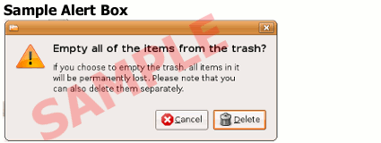

| 
Alert boxes are small messages the computer places on the screen to alert you to important information or to ask you questions before carrying out a task. A sample image of an alert box is shown to the right.
When an alert box appears, you must read the message or question and respond by clicking an appropriate button. Click the link below to pop up an alert box, then read the message and click the appropriate button in the alert box to continue to the next page. Click me to pop up an alert box |